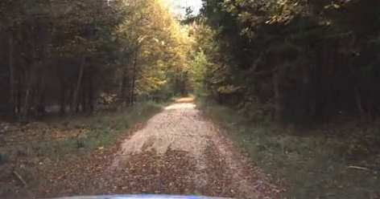
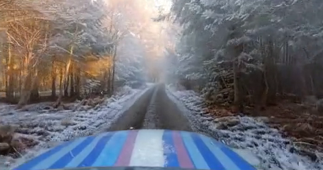

01 · MISSING CASES
Rare weather is hard to schedule.
Rare combinations of weather, light, traffic, and place matter for validation, yet they are difficult to capture safely and repeatedly.
long-tail coverage
AV DATA COVERAGETHE LONG TAIL
Generative video · inference-time computation · evaluation
A Visual Lesson on Verifier-Guided Test-Time Scaling for Generative Video
Test-time scaling means spending more computation when a model is used to solve a task.
Here, Best-of-N generates several fog clips from one drive.A verifier checks the candidates and helps decide which, if any, to keep.
A test fleet cannot count on dense fog appearing on the road it needs to study.
A video model synthesizes a sequence of frames. Text describes the change, and visual inputs guide what stays in place.
The model takes a recorded drive, an edge guide, and a fog request. A different random seed can produce a different take.
Synthetic variants can probe a data pipeline. They do not certify vehicle safety.
Your task: choose a fog clip, test the rule behind that choice, and defend a decision on a new scene.
Learning goals: explain why more sampling changes the pool, support a choice with visual evidence, and apply a rule that can reject every take.
Starting knowledge: no code or prior VLM experience is required. The core route suits introductory university teaching; the research notes add model and systems detail.
Pace: allow about 15–20 minutes for the core interactions, with optional time for research notes.
InferenceA trained model produces an output from its inputs.
Test-time scalingExtra computation is spent at inference. Here, it buys more samples.
VerifierA verifier evaluates a candidate against stated criteria.
01 · MISSING CASES
Rare combinations of weather, light, traffic, and place matter for validation, yet they are difficult to capture safely and repeatedly.
02 · CONTROLLED COUNTERFACTUALS
Conditional world generation can build these counterfactuals. NVIDIA Cosmos Transfer 2.5 combines the original drive, a weather prompt, and an edge guide to preserve structure while restaging the conditions.
Builds a clean video over time
The guide follows roads and objects through time.
Prompted weather with edge-guided structure.
03 · QUALITY GATE
The same brief can yield weak weather, warped geometry, or unstable motion. A verifier checks requirements before candidates are ranked.
Minimum street fidelity
Take 07 is excluded before scoring. Takes 03 and 04 remain eligible.
The balanced illustrative rubric ranks Take 04 above Take 03.
Below the gate, a high score cannot compensate.Demo outputs use Cosmos Transfer 2.5. The extended study also examines Cosmos 3 Nano.
Compare the candidates ↓Both takes start with the same drive and fog request.Compare the haze, the lane markings, and the moving vehicles.
02 · EXPAND THE CANDIDATE POOL
N is the number of takes you generate.Compare your options as N increases.
Ma et al., CVPR 2025 studies inference-time search for diffusion models. Video-T1, ICCV 2025 extends search and verifier feedback to video.
N=1 offers one candidate. It can still be rejected.
Both policies generate N clips. Evaluation adds work and changes what enters the collection.
YOU ARE THE JUDGE
Inspect the visible candidates. Select a take.
05 · CHANGE THE WEATHER
The rain and snow runs use the same 4 seeds with different weather prompts.
Request: add moderate fog and soften distant buildings.
Compare takes under the same weather condition.CONTROLLED VARIATIONS
Which parts of the trail should survive the edit? Follow a road boundary as the camera moves.
A forest path becomes a water-filled track.
InspectCompare the path boundary, water surface, and apparent terrain height.
Interpret carefullyGenerated water has no measured depth or traversability label.
Curated from 3 seeds per scene and condition. These are selected examples from a 735-render study. Their inclusion is not an acceptance-rate estimate. Media provenance
CHOOSE WHAT TO INSPECT
Compare the recorded source on the left with the generated variant on the right. Follow one feature through time.
Brown water and muddy ruts replace the dry gravel surface.
Follow through timeFollow the road boundary, tree trunks, and distant structures.
Inspect closelyDo water edges remain stable as the camera moves? Appearance does not establish water depth or traversability.
Playback could not start. Use the download link to open this comparison.
ETH Zurich Robotic Systems Lab · Original source · CC BY-SA 4.0
Selections highlight changes worth inspecting. They are not validated successes or a measured acceptance rate. The Wikimedia examples come from a separate run and are outside the 735-clip judge audit below.
Compare your observations with a VLM judgeFollow the path, buildings, and moving objects as appearance changes. Spatial guidance provides a constraint, not a guarantee of scene preservation.
INSPECT THE EVIDENCE
Compare the generated scene with a winter recording of the same location.
Top left: sunny source. Top right: depth-guided generation. Bottom left: edge-guided generation. Bottom right: real snow.
Inspect snow appearanceCompare the road surface, distant visibility, vegetation, and illumination.
Account for the different dayLocations were matched using camera poses. Traffic, foliage, viewpoint, and timing differ, so the real clip is an appearance reference rather than a pixel-aligned target.
Describe a hot, dry trail with pale, cracked ground.
Keep asphalt dark gray, preserve the building and vehicle, and dry the vegetation around them.
The comparison holds the model and seed fixed. The prompt changes. The asphalt example exposes how broad weather language can unintentionally request a new surface material.
The scene-aware description was generated with a vision model. Its statements also need checking. These summaries are paraphrases; inspect the saved scene-aware prompt.
Can this real snowy drive verify every generated car and lane?
THE JUDGE LAB
A vision-language model reads video frames alongside a written question.
YOUR TURN · 2 RECORDED CASES
Follow the bottom edge of the frame as the vehicle moves.
YOUR REVIEW
Make your own assessment, then compare it with the recorded responses.
How does the model’s review compare with yours?
At 2.875 seconds, a thin edge is visible at the bottom of the recorded view. After the frost edit, a broad blue and pink hood covers the lower center.


What the model wrote“blue and pink striped hood of the car” appears under added_objects.
What the model scoredStructure preservation: 5/5. A rule requiring foreground objects to retain their appearance and extent would exclude this clip.
GOOSE · seed 202 · frame 47 of 93 · source credit · CC BY-SA 4.0
Play the original labelled comparisonRead the recorded responseShow this case on the projector
The study used these custom diagnostics. VBench was not run.
EVIDENCE AND LIMITS
ObservedAt N = 8, the illustrative fog rubric selects Take 07 on intensity alone. The balanced rubric selects Take 04.
Next testCompare both rules with independent choices on unseen drives.
ObservedThe night-rain clip received 5/5 for blind overall quality. With the target and source, the model rated condition match 2/5.
Next testLabel wetness and time of day separately, then count failures the judge accepts.
ObservedThe paired review named the striped hood yet rated structure 5/5. All 735 paired structure ratings in this batch were 5/5.
Next testTest additions and removals against independent labels. Measure both false acceptance and false rejection.
CONTINUE THE INVESTIGATION
Inspect the depth-remapping trial and the failures that remain.
SYSTEMSParallel generationExplore the measured 24-request Ray benchmark and A100/B200 observations.
TEACHING & REUSEFacilitation and exercisesSession routes, learning objectives, a printable worksheet, and assessment guidance.
Cosmos generated each candidate. Ray ran 4 GPU actors. 8 seeds finished in 2 waves.
@ray.remote(num_gpus=1)
class CosmosActor:
def audition(self, seed):
return cosmos.generate(seed=seed)
actors = [CosmosActor.remote() for _ in range(4)]
takes = ray.get([
actors[i % 4].audition.remote(seed)
for i, seed in enumerate(seeds)
])
winner = select(takes, rubric)Transfer 2.5 supports several structured controls. This experiment used the distilled edge checkpoint. The depth view above is illustrative.
06 · CHECK THE CUT
2 questions. 30 seconds.
QUESTION 1 / 2
QUESTION 2 / 2
Complete the knowledge check.
TEACHING & REUSE
Choose a session length, then use the transfer activity to assess how learners apply the method.
Open the projector presentation
These are suggested timings. Beginners may need longer.
Choose a task involving generated outputs. State what would count as useful, what would force rejection, and how you would evaluate the verifier itself.
A strong answer connects the decision rule to observable evidence and identifies a realistic way it could fail.
Use 0, 1, or 2 points per worksheet item: 0 for missing or unsupported reasoning; 1 for a plausible answer with an important gap; 2 for a clear requirement, relevant evidence, and an appropriate limitation. Total: 10 points.
For the nighttime example, a strong response distinguishes darkness and light-source behavior from generic wet-road realism. For the hood example, it identifies an unrequested foreground change despite the high score. For the real-snow comparison, it accounts for different traffic and viewpoints across days.
These are assessment anchors, not validated model scores. Accept other well-supported interpretations.
Created for the NeurIPS 2026 Education Track.
Original lesson and experiment design by Alicia Chua, Pawarit Laosunthara, and Eric Tang.
Cosmos Transfer 2.5 generated the videos. Ray distributed the runs. The selection mechanism applies beyond this model and framework.
Built on NVIDIA Cosmos. Cosmos Transfer 2.5 source uses the Apache-2.0 license. Model weights use the NVIDIA Open Model License. The original fog exercise uses the published example input. Extended comparisons use attributed dataset footage. Media sources and licenses. No endorsement is implied.
FIELD TEST · THE FINAL CUT
Choose a scene. Reveal the edit, then defend your decision with something you can see.
Requested editShift daylight to blue hour.
Can you still follow the impala?
Your decision pins the moment on screen.
Flooded mud · Pedestrians in snow · Impala at dusk · Forest night rain · Original weather montage
Edited comparisons show recorded sources alongside generated variants. Chapter times, original assets and licenses.